Archive Accessibility Pass
Three fixes. Keyboard focus and small amber text now meet the WCAG AA contrast floor, every button, chip and tile visibly reacts when pressed, and the welcome prompt can always be closed on small phones. Nothing about the archive's content, layout or features moves.
WCAG asks for 3:1. The old ring was barely visible on white.
Every control tested now shows it registered the tap or click.
The change goes live only when the PR is merged.
Amber that can be read
The archive's bright yellow-amber is a strong brand colour for fills, such as the selected year chip. It was also being used for thin lines and small text: the ring that shows keyboard focus, the "Featured buildings" link on hover, and the "Show 2 addresses" label on shared-view tiles. On white and light grey, those came in at 1.7 to 2.2:1.
Why it matters here. The stylesheet was written "sized for older eyes," and keyboard users depend on the focus ring to know where they are. WCAG 2.2 sets 3:1 as the minimum for focus indicators and 4.5:1 for small text. The old amber missed both.
The fix adds one darker amber, used only where amber has to be read as a line or as text. The bright amber stays on every fill. Inside the dark photo viewer, the bright amber is the readable one, so the ring there switches to it.
Keyboard focus on a year chip
Press Tab to reach a chip. The ring is how a keyboard user knows which control will respond.
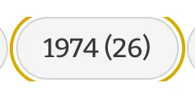
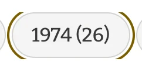
Keyboard focus on an address tile
The same ring around a building card in the sidebar.
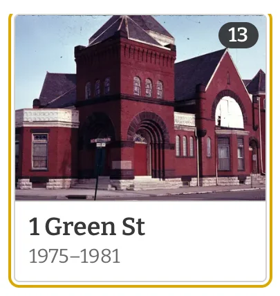
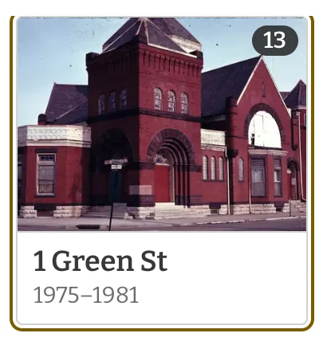
Amber text: link on hover and the shared-view label
Small text in amber, the case where the old colour was weakest.
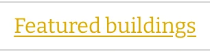
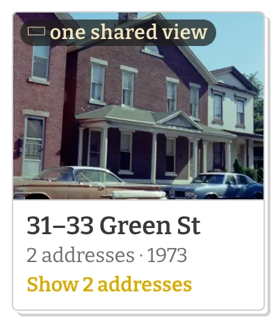
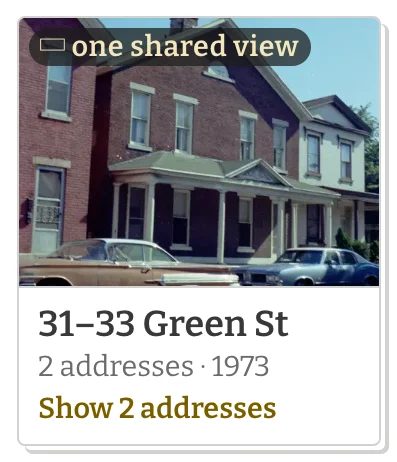
Every control answers a press
On the live site, pressing a year chip, a street heading or an address tile changes nothing until the click completes. Only 2 of the 60 controls tested gave any sign they had been pressed. Each one now darkens or fills the moment it is pressed. Buttons also shrink very slightly (to 96%, cards to 98%) and ease back when released.
Why it matters here. On a phone, a tap with no response feels like a miss, and people tap again. Over a slow connection, that second tap can open the wrong building. Visitors who have reduced motion turned on in their device settings get the colour change only, with no movement.
A year chip, held down

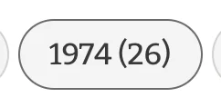
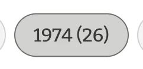
An address tile, held down
On the live site a pressed tile keeps its hover lift. In the preview it settles, takes a dark edge and drops its shadow.
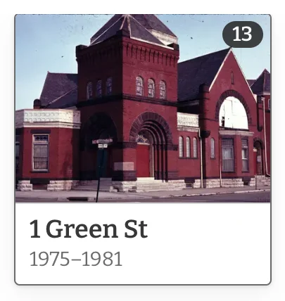
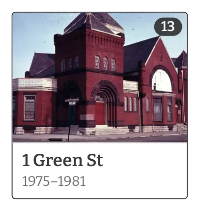
The welcome prompt fits small phones
On a first visit, a "See the district change" prompt sits over the map. On shorter phones such as the iPhone SE, the prompt was taller than the map area, so its top edge slid under the search bar. That hid its title and the × that closes it, and left it covering most of the map. This was already happening on the live site.
Why it matters here. A first-time visitor on a small phone met a box they could not dismiss, over the map they came to use.
The prompt now stops above the map buttons and scrolls inside itself when it runs out of room, so the × is always on screen.
What stays the same
- All content, photos, the map, search, filters, Compare years and deep links.
- The bright amber on every fill: selected chips, the Clear filter button, map pins and the timeline.
- Hover effects, which already worked on 57 of 60 controls.
- The page still loads nothing from outside its own folder.
How it was checked
- Contrast: every colour pairing was run through a WCAG contrast calculator (from the open-source tastemaker project). The new amber passes 4.5:1 on all five light surfaces the page uses.
- Press, hover, focus and release: an automated probe (from better-design) pressed every control in headless Chrome at desktop size, with and without reduced motion. None got stuck in a pressed state.
- A known quirk: when the probe tests many controls in a row, it misses some presses. Every control it flagged was retested on its own and passed.
- Phones: a full walkthrough (load, menu, list, tile, map popup) ran in Safari's engine (WebKit) at iPhone 13 and iPhone SE sizes, and in Chrome at iPhone 13 and Pixel 7 sizes. No sideways overflow, no errors.
- iPhone press states: Safari only shows press feedback on pages that listen for touches. The archive now does, with one line of script.
- Not yet checked: a by-eye pass on a real phone.
Approve the darker focus ring?
The new ring is the change visitors are most likely to notice. Two ways to meet the standard:
Once a ring is chosen, merging PR #1 publishes all three fixes to the live site.